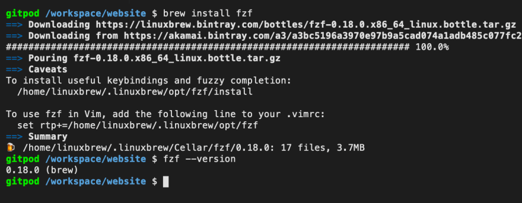
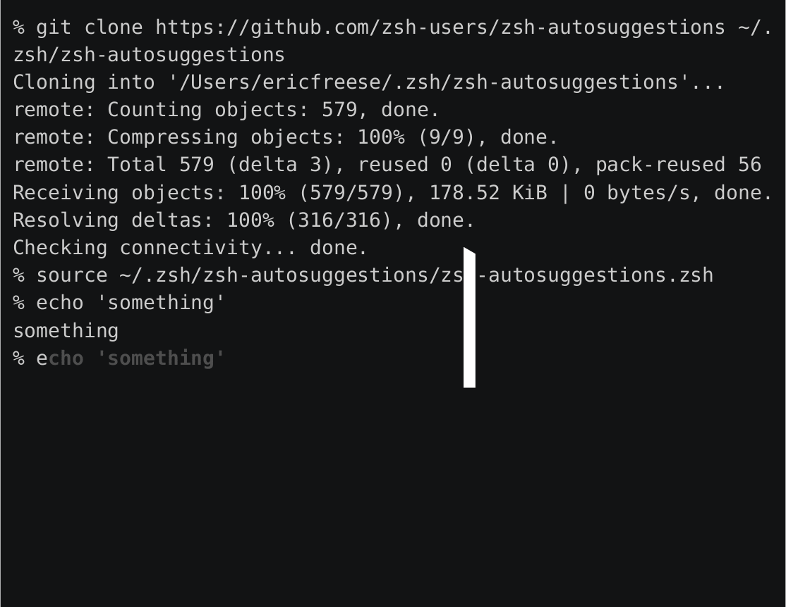
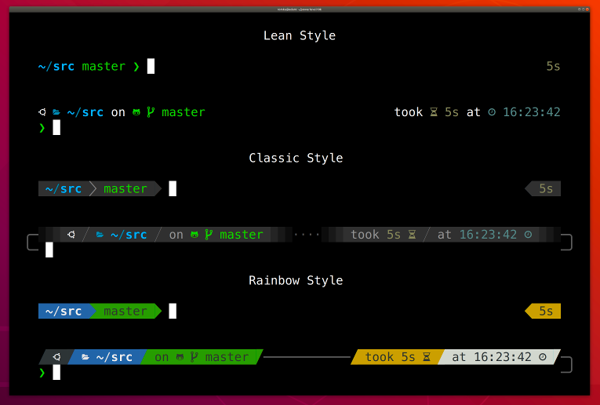

Terminal Configuration#
Terminal Setup#
Xcode#
Install Xcode using the built-in Terminal app
xcode-select --install
Homebrew#
Install Homebrew using the built-in Terminal app
Homebrew calls itself "The missing package manager for macOS" and is an essential tool for any developer.
Installation
/bin/bash -c "$(curl -fsSL https://raw.githubusercontent.com/Homebrew/install/master/install.sh)"

iTerm2#
Install iTerm2
iTerm2 is an open source replacement for Apple's Terminal. It's highly customizable and comes with a lot of useful features.
brew install --cask iterm2

zsh#
Install zsh
The Z shell (also known as zsh) is a Unix shell that is built on top of bash (the default shell for macOS) with additional features.
brew install zsh
Restart your terminal after running the above command
Oh My Zsh#
Install [Oh My Zsh]
[Oh My Zsh] is an open source, community-driven framework for managing your Zsh configuration. It comes bundled with thousands of helpful functions, helpers, plugins, themes, and more.
shell
sh -c "$(curl -fsSL https://raw.githubusercontent.com/robbyrussell/oh-my-zsh/master/tools/install.sh)"

Terminal Customization#
Hotkey Shortcut#
Create a custom hot-key to launch iTerm2 from
anywhere: (^ + ⌥ + ⌘ + i)
iTerm2 Preferences->Keys->Hotkey->Create dedicated hotkey window- Set iTerm2 to open (hidden) at login:
System Preferences->Users & Groups->Login Items - If not already, set all profiles to use the
MesloLGS NFfont iniTerm2 Preferences->Profile->Text->Font

Oh My ZSH Plugins#
zsh-syntax-highlighting#
Install zsh-syntax-highlighting
git clone https://github.com/zsh-users/zsh-syntax-highlighting.git ${ZSH_CUSTOM:-~/.oh-my-zsh/custom}/plugins/zsh-syntax-highlighting

zsh-autosuggestions#
Install zsh-autosuggestions
git clone https://github.com/zsh-users/zsh-autosuggestions $ZSH_CUSTOM/plugins/zsh-autosuggestions

powerlevel10k#
Install powerlevel10k OhMyZSH theme
git clone --depth=1 https://github.com/romkatv/powerlevel10k.git ${ZSH_CUSTOM:-$HOME/.oh-my-zsh/custom}/themes/powerlevel10k

.zshrc configuration#
The ~/.zshrc file is the default configuration file for the new zsh x Oh My ZSH
shell environment.
There is an example file but we will be making changes
to the plugins as well as the theme of our zsh environment by updating the
following lines:
ZSH_THEME="powerlevel10k/powerlevel10k"
plugins=(
git
colored-man-pages
colorize
pip
python
brew
macos
zsh-syntax-highlighting
zsh-autosuggestions
)